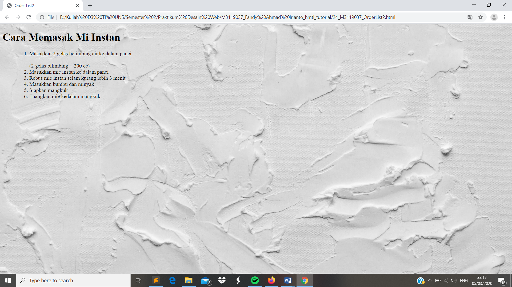

Ordered List
//Untuk Ordered List merupakan penempatan item pada html secara berurutan misal huruf ataupun angka. Dan untuk Ordered List merupakan kebalikan dari UnOrdered List yakni penempatan yang berurutan. Untuk membuat Ordered List dapat menggunakan perintah <ol> kemudian setelah itu <ol>. Jika ingin menambahkan keterangan dalam list maka gunakan perintah <br />
Codingan
<!DOCTYPE html>
<html>
<head>
<meta charset="UTF-8">
<title> Order List2 </title>
</head>
<body style ="background:url(background.jpg); background-repeat: no-repeat; background-size: cover;">
<h1>Cara Memasak Mi Instan</h1>
<ul>
<ol>
<li> Masukkan 2 gelas belimbing air ke dalam panci </li>
<br />
(2 gelas bllimbing = 200 cc)
<li> Masukkan mie instan ke dalam panci </li>
<li> Rebus mie instan selam kurang lebih 3 menit </li>
<li> Masukkan bumbu dan minyak </li>
<li> Siapkan mangkuk </li>
<li> Tuangkan mie kedalam mangkuk</li>
</ol>
</body>
</html>
Tampilan Hasil Percobaan

Kesimpulan
Pada percobaan Unordered List tag <li> berfungsi untuk membuat list pada halaman web. Sedangkan untuk menentukan unordered list nya adalah dengan tag <ul>. Dalam percobaan kali ini menambahkan keterangan pada list dengan menggunakan perintah <br />.